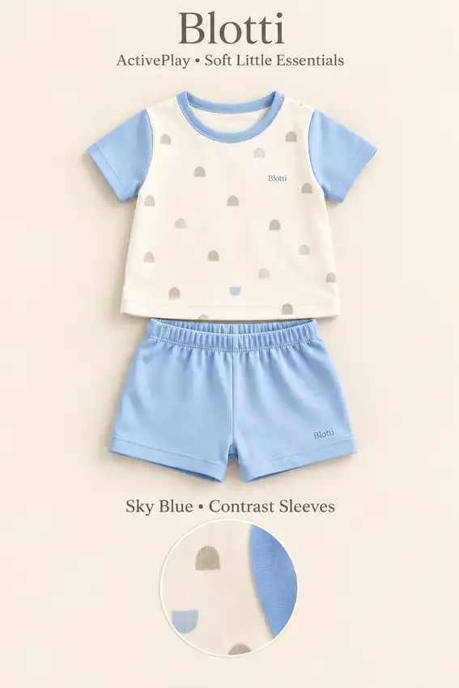
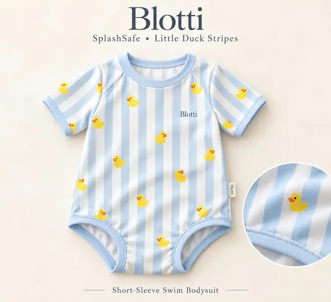

Premium claims are easy. Proof is harder.
Quality promises and age-based sizing leave families unsure what is worth paying for and what will actually fit.
Building a babywear brand where verifiable fabric performance, confident sizing, and customer learning work together to create enduring value.

Source for all four figures: Blotti Business Proposal (pp. 4, 9–10). Forecasts require validation against real sales and costs.
Blotti aims to become a trusted Vietnam-born babywear brand that makes thoughtful fabric quality and dependable fit guidance easier for families to understand and experience. We envision customer learning strengthening product design over time.
Vision language interpreted from the supplied business proposal and 2030 “Data + Know-how + Trust” roadmap. It is an ambition, not a completed outcome. Building trust, stitch by stitch
Building trust, stitch by stitchParents can buy baby clothes anywhere. The missing link is reliable evidence that a product performs well and fits their baby, before and after purchase.
Quality promises and age-based sizing leave families unsure what is worth paying for and what will actually fit.
Specify, test and monitor materials; recommend sizes from measurements; learn from structured feedback.
Better first-fit experiences could support retention, the next-size purchase journey and stronger lifetime value.
Our strategic wedge: an integrated fabric quality + measurement-based fit + customer learning process. The concept is differentiated, but its commercial advantage is not yet validated.
Vietnam’s digital children's fashion category offers a promising place to test a differentiated D2C proposition. Market volume alone does not guarantee a winning brand.
Tracked gross merchandise value across Shopee, Lazada and TikTok Shop.
TikTok Shop’s share of Q1 2026 tracked children's fashion GMV. A channel signal for education-led commerce, not a market share forecast for Blotti.
Vietnam’s 2025 total fertility rate (children per woman). Lower births make retention, careful unit economics and disciplined segmentation essential.
A broad platform GMV figure is not a babywear-only addressable market estimate. Blotti's obtainable demand, premium willingness to pay and conversion require primary testing. We do not present top-down market estimates as independently validated sales potential.
Three reinforcing capabilities create the proposed route from a first purchase to long-term relationship value.
Translate specifications into quality assurance: choose fabric criteria, test relevant safety and wash performance, and document batch consistency.
Begin with human-readable measurement guidance; use consented fit feedback to refine next-size suggestions only after effectiveness is proven.
Lead D2C with a proposed VND 399k hero product, parent education and selective social commerce; expand SKUs and channels only after repeatable demand.
Repeat purchases should be earned by accurate fit and product satisfaction, not assumed from growth alone.
Original Blotti concept imagery supplied with the project. These visual assets express the proposed aesthetic; actual fabric composition, testing, production volumes and SKUs are not yet verified.




Revenue design: the proposal starts with core babywear sales, explores “Mẹ Tròn Con Vuông” postpartum mother-and-baby matching sets as a potential upsell, and proposes next-size purchases as a repeat-demand mechanism. The matching line remains an unvalidated future extension, not an available catalog item.
The launch scorecard prioritizes proof of willingness to pay, customer acquisition efficiency and product/fit validity. Targets are not achieved results.
Proposed conversion range from the Business Model Canvas.
Actual: Not availableProposed CAC ceiling; paid acquisition results must confirm.
Actual: Not availablePlanning assumption, sensitive to actual COGS, returns and discounting.
Actual: Not availableConsumer survey intent is directional; paid orders must validate WTP.
Actual: Not availablePass agreed QC and applicable chemical safety checks, publish results.
Document size recommendation accuracy from real-wear feedback.
Measure completed purchases, actual CAC, contribution margin and returns.
Measure repeat orders and next-size purchase cohorts before scaling.
Sources: BMGT Framework, Business Model Canvas (MVP CAC and conversion targets); Blotti Business Proposal, pp. 4 and 9 (price and model margin). Visualization meter lengths are decorative, not performance.
Three planning years from the proposal. Not historical results, audited figures, secured contracts, or investment advice.
| MODEL LINE ITEM | YEAR 1 | YEAR 2 | YEAR 3 |
|---|---|---|---|
| Revenue | 798 | 1,995 | 3,990 |
| Total costs | 657.2 | 1,759 | 3,169 |
| EBIT / operating profit | 140.8 | 235.4 | 820.8 |
| EBIT margin (calculated) | 17.6% | 11.8% | 20.6% |
Model source: Blotti Business Proposal, p.10. EBIT margins are calculated from those forecasts. Year 2 and 3 EBIT show minor rounding differences from revenue minus displayed total costs. All figures remain unverified projections.
Investment interpretation. The proposal forecasts revenue rising from VND 798M in Year 1 to VND 3.99B in Year 3. This growth is contingent on validated demand, robust COGS, disciplined CAC, reliable product quality and sufficient working capital. No scenario is guaranteed.
The strategic sequence from Blotti's business proposal: build evidence, earn retention, then broaden reach and defend through accumulated know-how.
Prioritize a focused MVP: fabric/product trials, fit guidance testing and actual willingness-to-pay evidence before scaling.
Roadmap years represent strategic intentions from the Business Proposal (p.11). An 8,500-unit / USD 130.5k statement appears in the roadmap but does not reconcile with the separate Year 1 VND 798M revenue forecast at VND 399k per unit. It is excluded from investor KPIs pending reconciliation.
A proposed USD 100k funding envelope focused on validating product performance and market demand. Investment instrument, valuation, dilution and investor terms have not been specified.
Release spend against prototype approval, applicable product testing, measurable conversion and unit economics instead of immediately expanding SKU count.
Illustrative fundraising request from the proposal. No commitments, share terms, valuation, minimum ticket, or legal offering documents are represented.
Credible capital raising means showing the open questions alongside the compelling parts of the story.
Survey willingness to pay is not a substitute for real completed purchases. Test conversion and retention at the proposed price.
MITIGATION: Small-batch D2C paid validationSpecifications, wash consistency and relevant textile-safety rules need actual testing. No brand certification has been demonstrated.
MITIGATION: Independent checks, batch-level QCCustomer data is limited at launch, and visible size-finder functionality is easy to imitate.
MITIGATION: Validate recommendations and feedback loopReturns, platform fees, inventory, supplier minimums and CAC may change contribution economics. A declining birth rate adds pressure.
MITIGATION: Milestone-gated capital deploymentNot yet supplied: audited or actual sales, dated purchase cohorts, order-level COGS, lab certificates, contracts, documented CAC/retention results, cap table, valuation, financing structure, and investor subscription materials.
Internal inconsistencies requiring confirmation: the five-year roadmap's 8,500-unit / $130.5k launch statement and Year 1 financials (VND 798M); the presentation's SOM $45,563 versus displayed 0.61% of $6M SAM (arithmetic is approximately 0.76%). Neither is shown as a verified investment metric.
Presentation limitation: a static academic business concept website does not constitute a securities offer, audited projection or assurance of future returns.
Explore the assumptions, review the rollout gates, and start a substantive discussion about the proposed capital plan. Founder contact details are not publicly verified in the supplied materials.
Blotti Business Proposal (Group 2, 2026), pp. 4, 9–11, and BMGT Framework (Final), Business Model Canvas and SWOT/TOWS. Internal projections and targets, not actual performance.
External market statistics describe tracked categories and cannot be assumed to represent Blotti's serviceable market. Website current as of October 30, 2026. No claims of awarded certification, closed fundraising, or realized revenue are made.